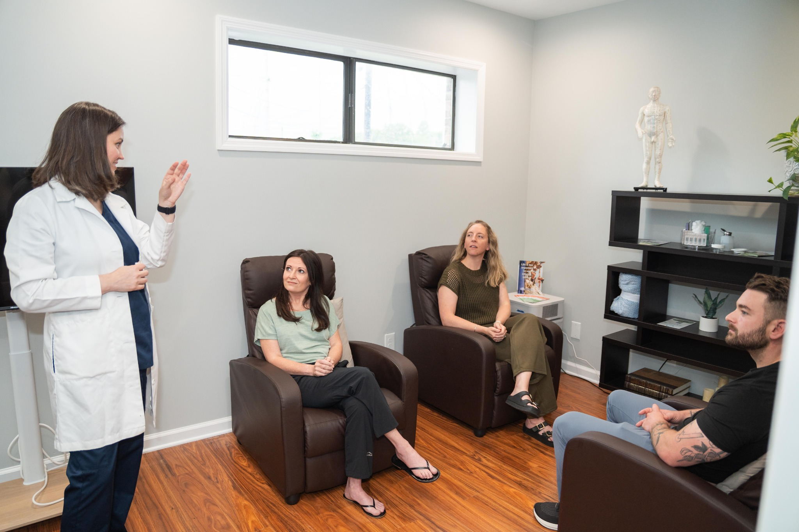
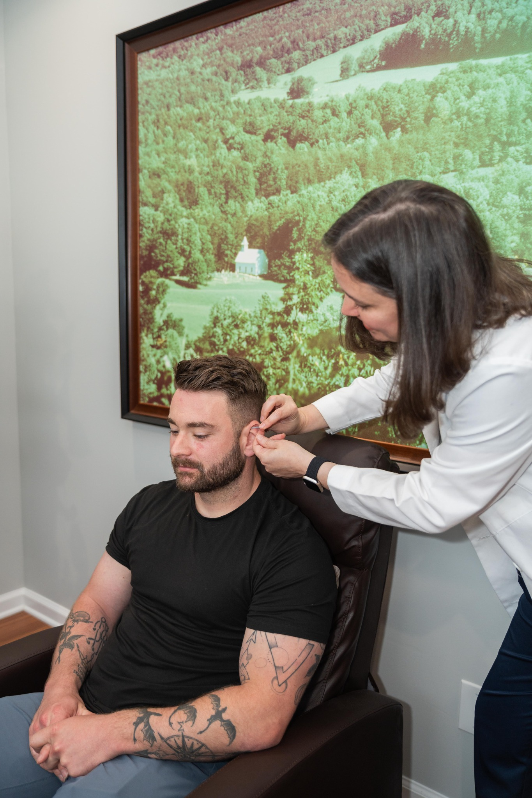
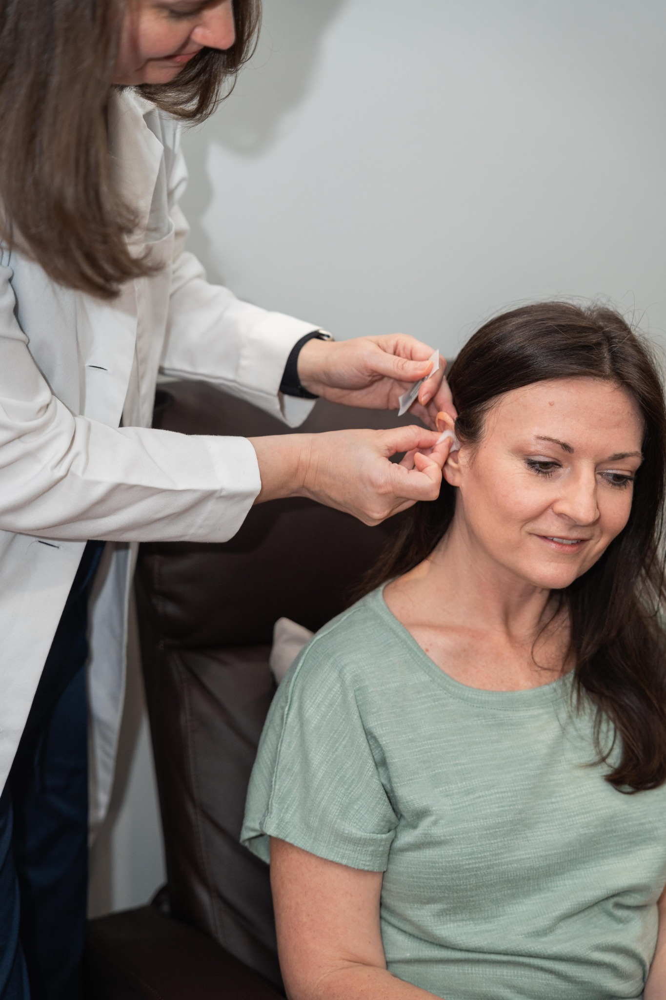

How It Works
A simple approach designed to make acupuncture more accessible while maintaining a calm and supportive care experience.
1. Reserve Your Spot
Reserve your place online for $90. Your payment secures your reservation for an upcoming community clinic.
2. Complete Your Intake Form
A new intake form is required with every reservation. Please complete the form after making your payment, even if you are a returning patient.
3. Confirm Clinic Availability
Community clinic times are currently to be determined based on demand. Clinic availability will be communicated as dates and times are established.
4. Receive Care
Relax in a calm, shared treatment space while receiving focused acupuncture tailored to your primary concern.
What to Expect at the Community Clinic
Our community clinic is designed to feel simple, welcoming, and accessible.



Pricing
Our standard reservation rate helps support our nonprofit community acupuncture program while allowing us to consider reduced-fee care when needed.
Reserve and pay online to secure your place in an upcoming community clinic. A new intake form must also be completed for each reservation.
We understand that cost can sometimes be a barrier to care. Sliding-scale care may be considered on a case-by-case basis according to individual circumstances and available nonprofit resources. Please contact us to inquire.
Important Reservation Information
- The standard online reservation rate is $90.
- Every reservation requires a newly completed intake form, including reservations made by returning patients.
- Sliding-scale care is considered on a case-by-case basis and is not guaranteed.
- Please contact Access Point Acupuncture if cost is a barrier and you would like to inquire about sliding-scale availability.
- All $90 reservations are non-refundable, as they secure a limited appointment space.
Your Visit
Sessions are shorter than private appointments while still providing meaningful support for your body’s healing process.
Complete Your Intake
Please complete a new intake form for every reservation, even if you have visited Access Point Acupuncture before. This helps us prepare appropriately for your current visit.
Comfortable Clothing
Please wear loose, comfortable clothing and come prepared to relax.
Shared Clinic Setting
Community acupuncture is provided in a shared setting, allowing us to offer focused care in a calm and efficient environment.
Frequently Asked Questions
When is the community acupuncture clinic?
Community clinic times are currently to be determined based on demand. Please contact us with questions about upcoming clinic availability.
How much does a reservation cost?
The standard reservation rate is $90. Payment is made through the online reservation link.
Do I need to complete an intake form if I am already a patient?
Yes. A new intake form is required with every reservation, including for returning patients. Please complete the intake form after making your reservation payment.
Is sliding-scale care available?
Sliding-scale care may be considered on a case-by-case basis according to individual circumstances and available nonprofit resources. If cost is a barrier to receiving care, please contact us to inquire.
Are reservations refundable?
No. Reservations are non-refundable because payment secures a limited appointment space in the community clinic.
What do I need to do to complete my reservation?
There are two required steps: first, submit your $90 reservation payment. Second, complete the intake form for that reservation. Both steps should be completed each time you reserve a visit.
Ready to Visit?
Complete both steps below to reserve your community acupuncture visit. Clinic times are currently being determined based on demand.
Make your $90 reservation payment and then complete a new intake form for that visit.